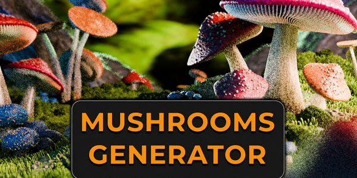
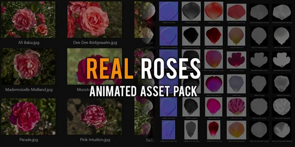

Genuinely original
Every source photograph comes from my own garden—not from stock websites or recycled asset packs.
Original garden photography · Blender add-on
Add realistic plants, flowers and natural variation to your scenes in seconds using a lightweight photographic billboard workflow.
A faster way to landscape
Complex plant models quickly increase polygon counts, memory use and setup time. Quick Garden Billboards combines a curated photographic library with direct controls for convincing, lightweight vegetation.
Every source photograph comes from my own garden—not from stock websites or recycled asset packs.
Populate larger environments without filling the scene with complex plant meshes.
Choose Flat, Cross 2, Cross 3 or Cross 4 according to distance and required volume.
The source matters
This collection was not assembled from generic internet images. I photographed the source material personally and prepared it specifically for use in Blender.
Standard: 44 prepared assets. PRO: 114. The real garden—and the digital library built from it—will continue to grow.
Focused controls
Browse thumbnails and filter by category or color.

Orient selected plants toward the active camera around global Z.
Vary scale, rotation, flipping and hue with a repeatable seed.
Select a ground mesh and drop multiple plants vertically onto it in one action.
Adjust height, width and overall scale without rebuilding the billboard geometry.
Control brightness, saturation and hue while preserving the original photograph.
Apply geometry, orientation and visual changes to several selected QGB objects at once.
Create linked variations and randomize scale, rotation, flip and hue with a repeatable seed.
Performance ↔ volume
A strong balance between visual volume and efficiency.
Original source photography
Every frame below was photographed in my own garden. Different species, colours and life stages become the authentic source material for the billboard library.
Four direct moves
Filter the visual asset library.
Place an asset at the 3D Cursor.
Set geometry, scale, color and orientation.
Create and randomize natural variations.
Technical information
PRO library expansion / +70 new assets
Move beyond a starter palette. Quick Garden Billboards PRO gives you 114 production-ready plants for denser beds, stronger silhouettes and scenes that do not feel repeated.
Same fast workflow. 2.6× the creative range.More species. Better coverage. Fewer repeats.
Layer trees, conifers, flowering shrubs, foliage, groundcover, borders and garden details without leaving the lightweight billboard workflow. The expanded range makes repetition less visible and art direction more specific.
Ready for larger gardens? Keep the speed. Unlock the full library.
Explore Quick Garden Billboards PRO ↗Continue building / MambaCG
Extend the same scene with focused tools for water, HDRI lighting and atmospheric skies.
Create realistic oceans, waves, pools, baths, fountains and small water surfaces with a clean Blender workflow.
View on Superhive ↗Browse HDRI previews inside Blender, create worlds and skies, and combine HDRI lighting with cloud presets.
View on Superhive ↗Use animated cloud presets, wind controls and cloud layers to build atmospheric Blender skies faster.
View on Superhive ↗
Create customizable, fully animatable mushrooms for realistic daytime forests and glowing fantasy scenes.
View on Superhive ↗
Detailed roses with real-world textures, Geometry Nodes customization and natural blooming animation.
View on Superhive ↗Create animated stylized water with procedural shading, Geometry Nodes waves, foam, ripples and floating-object controls.
View on Superhive ↗